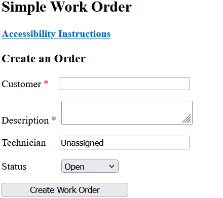

Data
Data or data processing is best explained by example. If you run a business with some spreadsheets, but maintaining those spreadsheets is getting more complex and time consuming, then data processing could be a solution for you. I can bridge the gap between large solution providers that are expensive and might not have the support for the industry you are in and spreadsheets.
I can automate the process of extracting data from a spreadsheet, doing some complex processing on the data and then returning the data that can then be imported back to a spreadsheet or displayed on a web page. Displaying the data on a web page on your intranet(not on the public internet), has the advantage of being available on mobile devices or on your production floor without having to buy licenses for spreadsheets.
There are many ways to accomplish this and I have the ability to work with your existing staff and IT contractors help you arrive at a solution that can save you time and money as well as drive production efficiencies.
Tech Stack
A complex website often has two parts that work together to create the finished product. First is the front end. It is the part that you see, the layout, colors, images and text that are visible through the browser. The base technologies for the front end are HTML and CSS. JS is often used to create added visual interest and choose which text to display. JS allows the developer interact with the front-end in complex ways. The key idea to know is that all of the work on the front-end is done by the users computer. Data is only retrieved from the server through HTML files, very little data processing is done. The front-end is for displaying data. It is in "front" of the user.
If the site uses or manipulates data provided by the user or stores data for future use, then a back-end it needed. The combination of the two is called the "full stack". Back-end technologies reside on the server and retrieve data from the front-end and store or manipulate the data in some way. The Python programming language is very good for data manipulation while a database is most often used to store data. Most of the time an intermediary framework is used to mediate between the database and the data manipulation parts of the back-end. The framework I use most often is Flask. Doing the data manipulation and storage on the back-end has the advantages of security and gives the ability to share the data with other users, applications or processes.
There are other ways to process and display data but they are not web technologies and are beyond the scope of this discussion. Other "stacks" are available, but the one listed above is one of the simplest and most reliable.
Example
The following is an example of the data processing that I can provide. The site is a work order tracking site. It is stand alone and free to use. It is under the MIT license as free and open source software. More information about this software can be found on my github site.
Click on the image below to access the software.
